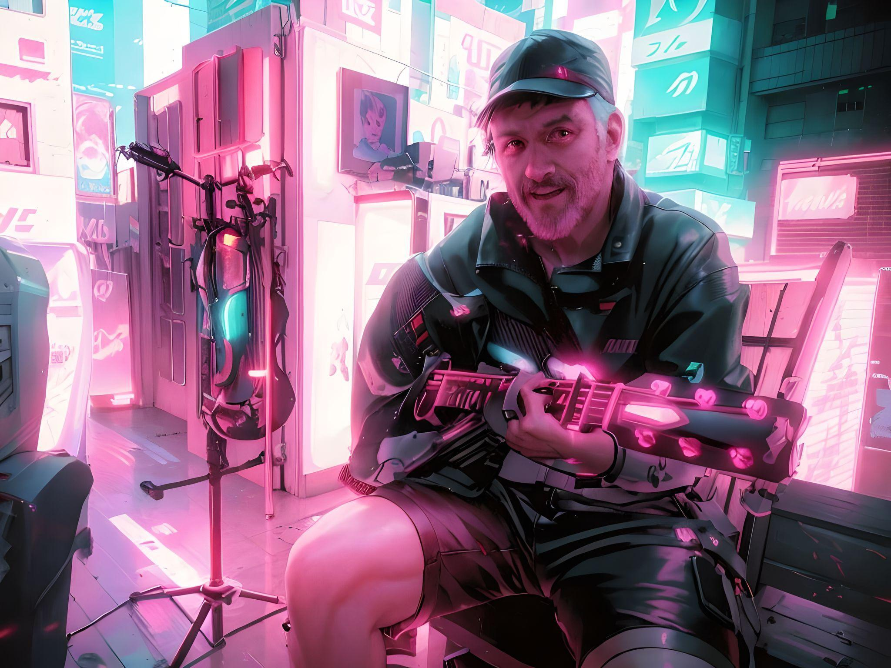
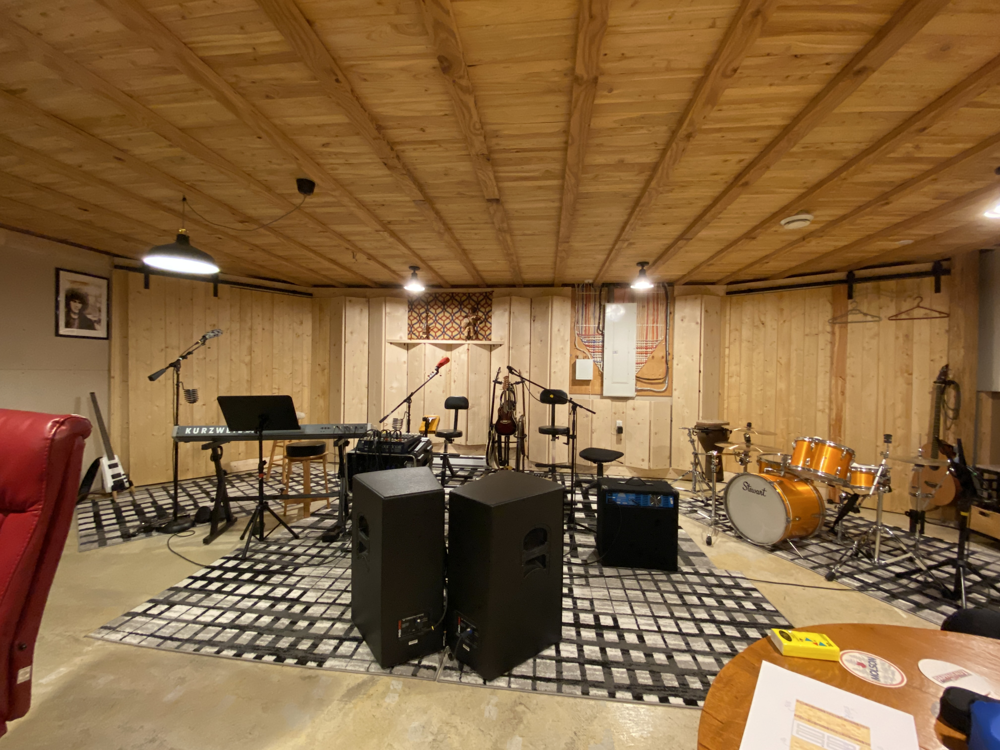

À propos de moi

Ma vision
Je me passionne pour la musique et j'y consacre le plus clair de mes temps libres.
Je chante et joue de la musique depuis plusieurs années.
Je désire continuer à améliorer mes habiletés de musicien.
Je veux également apprendre ou continuer d'apprendre les aspects techniques de la performance et de la production musicale.
J'étudie la conception de sites internet afin de pouvoir organiser au mieux mes activités musicales et celles de mes collaborateurs.
Mon histoire
J'ai commencé à jouer du violon à 9 ans.
J'étais diplômé en génie mécanique à 22 ans.
J'ai contribué et géré des projets informatiques pendant les 16 dernières de ma carrière professionelle.
Depuis ma retraite je me consacre à la musique.
Mes habiletés
Violon
- jouer à l'oreille
- improviser
Mandoline
- jouer à l'oreille
- improviser
- tout en chantant
Guitare
- avec un pic
- arpègé
- tout en chantant
Basse
- avec un pic
- avec 2 doigts
- tout en chantant
Production musicale
- Apple's LogicPro
- Mackie's Fader 4
- Mackie's Fader 5
Sonorisation
- AV Nivana's Room EQ Wizard
- JBL's Venue Synthesis
Mes réalisations
Studio à domicile

- Simulation OTL Room modes pour options des murs de coin
- Conception des diffuseurs muraux
- Construction des murs et plafond
- Mesures spectrales avec REW
- Positionnement des haut-parleurs
- 11 dB d'écart spectral de 40 Hz à 2000 Hz
Concerts de groupe
- L'Anglicane 2009
- Le vieux bureau de poste 2014
- Le petit Prince
- Bénéfice Festi-Jazz Saint-Michel 2023
- Bénéfice Relais pour la vie 2024
Lutherie
- Fabrication Telecaster à partir d'un kit
- Ajustement de pont sur Godin
- Changement des clés sur Les Paul
Chansonnier
- 24 Gratteries
- Retrouvailles 4H
- Concerts en ligne sur Street Jelly
- 50 chansons par coeur
Production musicale
- Videos YouTube
- Album CD: 12 mois de plaisir
- Compositions